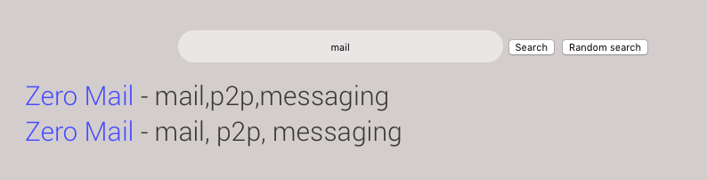
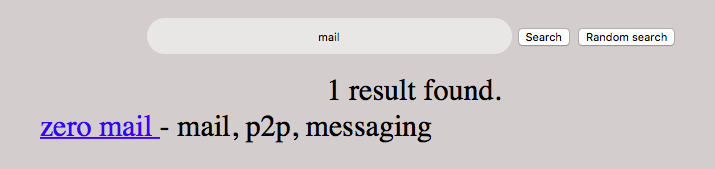

Kaffiene's site count has been the center of much controversy. Kaffiene is the only site to accurately report the number of sites in it's index. This claim is backed by a publicly accessible site index file, and a provided script to ensure no duplicate entries. This method guarantees that every result is unique and useful. However, due to this, other sites may claim to have more sites indexed. Unfortunately, it's almost always a case of overreporting and counting duplicate entries. Sites like ZeroSearch copy and paste Kaffiene's index without any sort of error checking or ensuring that sites are unique which leads to the inflated number. A simple way to test this is to just use the search engines as you normally would. As an example, say you were searching for the popular ZeroNet mail service 'ZeroMail'. You enter 'mail' as your search term. Here's what pops up ZeroSearch and Kaffiene.


As you can see, ZeroSearch does not properly return results and also does not provide an count of sites indexed. Copying indexes and using them as a base is not a problem. Kaffiene shares it's site index for this purpose. Cloning sites and improving upon them is one of the core ideas of ZeroNet. However, it should be expected that the cloned results have some sort of improvement, rather than a quick grab at results to try and boast the highest site count. On ZeroSearch (their index is found at data.dat in the ZeroSearch folder) the script found 300 claimed sites (the number ZeroSearch claims at the time of writing) but has 25 duplicates, making the actual total 275. Please be aware of the misleading attempts at gaining visitors.
As always, Kaffiene is dedicated towards giving you the absolute best and highest quality search experience.